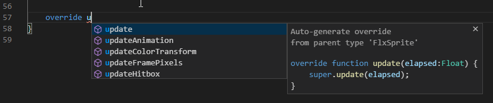

3 - Groundwork
EditNow it's time to think about what we actually want our game to be, and how we're going to pull it off.
The game we're going to help you build will be a very simple top-down 'dungeon crawler' game, where the player controls a single character, moves around a map, fights enemies and collects gold.
So, what does that all actually translate to in HaxeFlixel?
- First, we're going to need to setup our 'world' - this just means we'll need to have a
FlxStatewhere all the action happens, and figure out what we're going to put in the world. - For the dungeon itself, it will simply be a
FlxTilemap- and we'll draw our maps in another tool. - We will need a
FlxSpriteto represent the player on the screen. This will be the sprite that player will be able to control. - Enemies will be
FlxSpriteobjects as well, and we'll have a 'fancy' way to have different types of enemies. - We'll also need a HUD/Interface for the player to do stuff with and see what's going on. These will be a combination of
FlxGroup,FlxSprite,FlxText,FlxButtonobjects and some other things.
We'll tackle each of these things one-by-one.
First up, let's create a simple menu. Eventually, we'll want a fancy MenuState with a button for options, but for right now, we'll just have a button that says "Play" and switches to our PlayState.
Go ahead and delete the line we added for our "Hello World" test within the
PlayState.Now, right-click the
sourcefolder in VSCode's Explorer, selectNew Fileand enterMenuState.hx.Then, you can just copy the content of
PlayState.hxover, but replace the class name withMenuState:class MenuState extends FlxState {
Right after the class declaration, we're going define a new variable. This is where you would define all the variables that you intend to use throughout a given class. We need to define a new
FlxButtonvariable to use as our 'play' button. So, type:var playButton:FlxButton;
As before with
FlxText, the import should be added automatically. If not, you can also add missing imports via the light bulb that should appear after saving the file when you have your cursor overFlxButton.Now, type the following on the lines before or after
super.create();within thecreate()method:playButton = new FlxButton(0, 0, "Play", clickPlay); add(playButton);
(
import flixel.ui.FlxButton;)This creates a
FlxButtonobject and assigns it to theplayButtonvariable. We're telling it to make the button at position(0, 0)(the top left corner of the screen), to make it say "Play" on it, and to call the functionclickPlay()when a user clicks the button (we yet have to implementclickPlay()). Then we add the object to our state so that it can be shown and interacted with. Don't worry about the position of the button right now, we're going to move it in a second.Now we need to define our
clickPlay()function. Somewhere in the class, outside of any existing functions, type:function clickPlay() { FlxG.switchState(new PlayState()); }
(
import flixel.FlxG;)This function calls
FlxG.switchState(), which switches the state from whatever the current state is (MenuState) to a new instance ofPlayState.Technically, at this point, the functionality would work - you could run your game and it would do what we want it to do, but we're missing a few things. First, we want the button to be in a nicer place. Sure, we could set the
xandycoordinates when we create it, but there's a simpler way to do it.Back in
create(), add a new line somewhere after we create ourFlxButton, and beforesuper.create();type: Type:playButton.screenCenter();
screenCenter()is a function which takes an object and centers it on the screen either horizontally, vertically or (by default) both. By calling it on our button, the button will be placed in the center of the screen.Next, we need to make sure that the game actually starts with our
MenuState. OpenMain.hxand replace thePlayStatereference withMenuState.If you test your game out now, it should go straight to a black screen with our 'Play' button in the middle, and clicking the button will take you to another black screen. If that's what you get, it works! So far, so good!
Next, let's make a simple player sprite that you can move around on the screen.
First, we need to make a new Player class. You can think of classes as sort of a functional template. You can use them as-is in a project, but you also have the ability to extend them into new versions. You can kind of think of it as using tracing paper - when you extend a class, you put a new sheet of tracing paper on top - you can still see and use all the stuff in the original class (unless you draw over it), and you can add your own stuff.
We're going to be extending the FlxSprite class to create our Player class.
Create another new file in the
sourcefolder, this time calledPlayer.hx.Let's create a very basic class which extends
FlxSprite:package; import flixel.FlxSprite; class Player extends FlxSprite { public function new(x:Float = 0, y:Float = 0) { super(x, y); } }
With classes, we use the
superkeyword to refer to the parent class. So by callingsuper(x, y)within our constructor (callednew), we are basically saying to go up the chain to our parent class, in this caseFlxSprite, and call its constructor, passing it thexandyarguments that were passed to us.Next, we'll want to create a placeholder image to show us where our sprite is, so under
super(x, y);, add:makeGraphic(16, 16, FlxColor.BLUE);
(
import flixel.util.FlxColor;)All we're doing here is saying that we want to make this sprite's graphic be a 16x16 pixel blue square.
For right now, we just want to get the
Playerclass initialized, make sure that it works, and try adding it to ourPlayState. It's not going to move or do anything yet, that will come in a minute. So save the changes to ourPlayerclass, and go back to thePlayState. We need to define ourPlayervariable, so underneath the class line, add:var player:Player;
And in
create(), beforesuper.create();add:player = new Player(20, 20); add(player);
This simply assigns a new instance of our
Playersprite to ourplayervariable, telling it to be placed at(20, 20)on the screen, and adds it to ourPlayState.If you run your project right now, you should see our blue player on the screen!

Now let's get it to move around!
So, how do we actually want our player to move around on the screen? Let's support both arrow keys and WASD keys, in 8 directions: up, down, left, right, and diagonally. The player should move at a relatively fixed speed, but have a slight deceleration before stopping to give it just a little bit of 'feeling'.
First, define our player's movement speed and deceleration amounts:
In your player class, above the constructor, add:
static inline var SPEED:Float = 200;
Since this is a constant value that won't change, we make it
static inlineas well as following theUPPER_CASEnaming convention.Then, in the constructor, after you call
makeGraphic(), we need to add somedrag:drag.x = drag.y = 1600;
drag, in HaxeFlixel, is sort of a way to slow down an object when it's not being moved. This will prevent our player sprite from just running forever in the same direction when the user stops pressing any movement keys. This is somewhat arbitrary based on what 'feels' right - we can come back and tweak the numbers later on.While there are plenty of ways to handle player movement, it can be simpler to add it to the
Playerclass. We'll want to add a new function that will watch for player input and respond to it, so, make a new function:function updateMovement() { }
First, inside that new function, we want to define some helper variables so we can easily tell which keys were pressed later on in the function:
var up:Bool = false; var down:Bool = false; var left:Bool = false; var right:Bool = false;
Next, we want to actually find out which of these directions the player wants to move in. We'll do that by checking whether certain keys are currently being pressed:
up = FlxG.keys.anyPressed([UP, W]); down = FlxG.keys.anyPressed([DOWN, S]); left = FlxG.keys.anyPressed([LEFT, A]); right = FlxG.keys.anyPressed([RIGHT, D]);
(
import flixel.FlxG;)The
anyPressed()function allows us to ask if any keys out of a list of keys are currently being pressed. You send it an array of keys (their names) and it will returntrueif any of them are pressed. There are a couple of similar functions to check for other key states we might use later on.Next, we want to cancel out opposing directions - if the player is pressing up and down at the same time, we're not going to move anywhere:
if (up && down) up = down = false; if (left && right) left = right = false;
Next, we'll want to do something when the player is actually moving:
if (up || down || left || right) { }
After that, we need to determine which direction to move the player in, and by how much. A common mistake in games that allow diagonal movement is something like this:
velocity.x = speed; velocity.y = speed;
While this will, technically, move something diagonally down and right, it will actually move much FASTER than it really should be moving. This is because of the way triangles work. So, for our player to move, we're not just going to set its
velocitytospeed- that would be too easy! Instead, we're going to calculate exactly what its velocity should be with angles!The first part of this is to figure out what angle we want to have the player move based on the keys that are being pressed. With our player sprite's asset, angle 0 is to the right, and -90 (or 270) is up.
var newAngle:Float = 0; if (up) { newAngle = -90; if (left) newAngle -= 45; else if (right) newAngle += 45; } else if (down) { newAngle = 90; if (left) newAngle += 45; else if (right) newAngle -= 45; } else if (left) newAngle = 180; else if (right) newAngle = 0;
All this will do is create a temporary variable to hold our angle, and then, based on which direction(s) the player is pressing, set that angle to the direction we plan on moving the player.
Now that we know which angle the player should be moving in, we need to figure out with how much
velocityit needs to move that way. We're going to do this by settingvelocity.xtospeedandvelocity.yto0. Then we rotate that point around(0, 0)bynewAngledegrees.velocity.set(SPEED, 0); velocity.rotate(FlxPoint.weak(0, 0), newAngle);
(
import flixel.math.FlxPoint;)...and that's the end of our
updateMovement()function!The only thing left to do is to
overridetheupdate()function inPlayer.hxas well and callupdateMovement()from it. VSCode can generate the necessary boilerplate code for you, just typeoverrideand a space, after which a completion popup should appear:
Select
updateand press enter.Now you just need to add the function call, after which it should look like this:
override function update(elapsed:Float) { updateMovement(); super.update(elapsed); }
The
update()function, as you should remember, is called each 'frame' of the game. So, each time ourPlayStategets itsupdate()called, it callsupdate()on all of itsmembers, including the player'supdate(). This in turn will run ourupdateMovement()logic and adjust the player'svelocityaccordingly. After that, it call itssuper.update(), which will take thevelocitythat we've just changed into account and figures out where the player sprite should move to.
Whew! It sounds a lot more complicated than it really is - if you try out the game right now, you'll see that you can run around the screen by pressing any combination of arrow keys and WASD!
Next, we'll work on making the player sprite actually look like something!